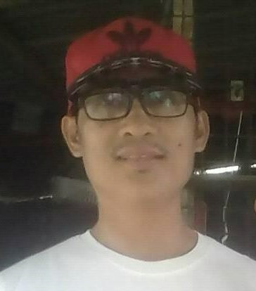

Email: michaeldacanay@gmail.com
Phone Number: 09162888687
Address: Brgy. 01 Poblacion Juan Luna St. Catanauan, Quezon
Work Experience
1998 - 1999
Kcomm-Network
Duties and Responsibilities
PBX Installer
Installation of PBX, conducts wiring and cable termination
to connect every telephone units.
Operational testing of
completed Installation.
Reporting and closing of completed
Installation.
1999-2000
MIESCOR(Project-Hired Technician of MERALCO,
ESCADA Department)
Duties and Responsibilities
Relay Panel Installation
Perform wiring and termination of cables for relays in
every substation.
Coordination with the Line Men and
Telecom personnel to conduct test of relays to
close and
open electrical circuit lines.
2002-2013
PSVSIA INC.
security Guard / Officer
2013 up to present
Self Employed
Doing Business
Studying of Web Development Course
Education
IETI
1995-1997
General Radio Communication
Short-Course: Advance Technical Training Center
June-August 2013
Computer Technician
Oct.2022 up to present
Refocus E-learning
Web Development Course
Skills
Knowledge in HTML, CSS, Javascript programming.
Knowledge in computer assembly.
Operating System installation and networking.
Spoken Languages
Filipino
English
Hobbies
Coding
watching movies
playing mobile games
References
Mr. Menandro Capule
Barangay Captain, Catanauan, Quezon
Hon. Boy Custodio
Councilor, Catanauan, Quezon
Jesusan Perez
Businesswoman, Catanauan, Quezon
Certifications
MIESCOR Employment Certificate
PSVSIA Employment Certificate
Academic Certificate

Summary
As a Web Developer I am able to contribute a highly collaborative
work envoronment and finding
solutions. Experience developing
consumer-focused websites using HTML, CSS and Javascript.
Good knowledge of the best practices for web design, and user
experience.